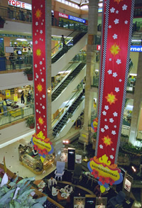

Ayo ke mal!
Malls are by far the most popular place to hang out in Indonesia. They are filled with teenagers people-watching and window shopping, two activities that don’t cost anything. If even a fruit juice for a few thousand rupiah at the stores in the food hall is beyond your budget, there are nearly always warung outside selling juices and tea at a fraction of the cost. Malls are generally open seven days a week, until 9 pm.
Reproduced with the permission of Katharina Popp.
Look at the poster for the grand opening of Mal Sukawati.
Here are several more words using the -lah imperative. Remember, -lah emphasises that you are telling someone to do something, but is also like adding a ‘please’ to the instruction.
Dapatkanlah
Jadikanlah
Saksikanlah
You will also see the -kan suffix, which often makes the base word a 'causative' or 'transitive' verb or both.
Causative means that the subject of the sentence (person or thing doing the action) is actively and deliberately causing something to happen. For example:
| jadi | become | jadikan | make it happen |
| besar | big | besarkan | make it larger (enlarge) |
Transitive means the verb needs an object after it. For example, the verb 'to heat' needs an object. You can't say 'I will heat'. You have to say 'I will heat something'. Likewise, 'witness' as a verb is transitive: 'Witness the show'.
When added to an adjective (describing word), ter- often turns the word into a superlative – that is, the most (base-word). For example:
| besar | big | terbesar | biggest |
| lucu | funny/cute | terlucu | funniest/cutest |
| gaya | style | tergaya | most stylish |
The word for week is minggu. When paired with hari, as in hari Minggu, it means Sunday.
| hari Minggu | Sunday |
| hari Senin | Monday |
| hari Selasa | Tuesday |
| hari Rabu | Wednesday |
| hari Kamis | Thursday |
| hari Jumat | Friday |
| hari Sabtu | Saturday |
| hari ini | today |
| besok | tomorrow |
| kemarin | yesterday |
The saying jam karet is used a lot in Indonesia. The idea is that time is flexible, being late doesn’t matter too much, things are flexible. It is a very relaxed mindset. It is also used to tease people who are frequently late; for example, dia selalu ngaret.
Besok can refer to tomorrow, or sometime in the future. Besok-besok means 'sometime after tomorrow'.
Tugas
Hafalkan!
Try to memorise the days of the week. It can help to make a mnemonic to help. This might be a chant or rhythm to help you learn the words in their order, or a first-letter mnemonic to help you with the order of the words.
Use the first letter of each word to make up a sentence that will help you remember the order. You can start with whichever day you like (as long as you remember which day – it would make sense to start with Sunday or Monday).
Reflect
Why do you think advertisements frequently use -lah?
-lah is telling you to do something. Advertisements use that to encourage whoever looks at it to do what they want.
Pertanyaan
Make up five questions based on the poster (in Indonesian if you can).
Submit the questions and answers for discussion.